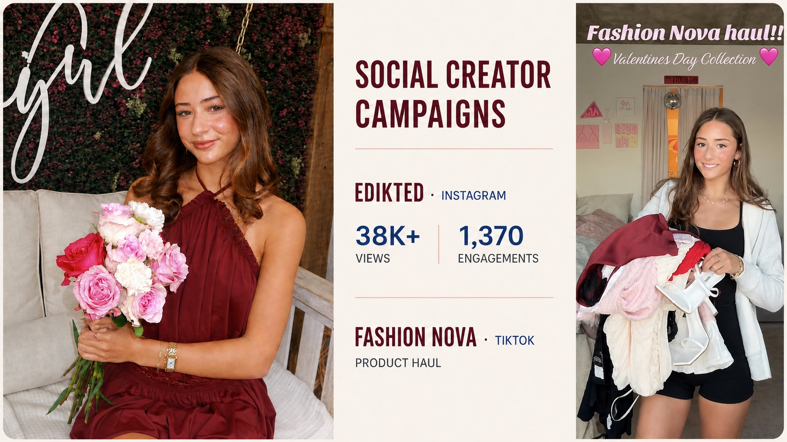

Learning through campus campaigns and a brand collaboration
In February 2026, I joined Edikted and Fashion Nova campus campaigns through the Alpha Phi sorority at ASU. It was a chance to participate in my sorority while learning how brand campaigns work on Instagram and TikTok.
The 60-member Edikted campaign generated nearly 2,000 Instagram engagements. I followed the brand brief, posting requirements, and campaign schedule while creating my own photo and short-form video content.
After the campus campaign, Edikted invited me to an individual collaboration. I worked directly with its marketing team to plan, create, publish, and review the performance of my content.

Instagram performance
Two Instagram posts from my individual Edikted collaboration received more than 38,000 views and 1,370 engagements. Seeing those numbers made me curious about what turns attention into interaction.
What I worked on
- Read the brand briefs and planned ideas for each piece of content
- Chose outfits, styled products, and photographed and filmed the content
- Edited and published each post on schedule and according to the platform requirements
- Communicated directly with Edikted’s marketing team during the individual collaboration
What I created
- Campus campaign photo and short-form video content for Instagram and TikTok
- Two Instagram feed posts for the independent Edikted collaboration
- Instagram Stories with product tags
- Content featuring the campaign discount code
Seeing social engagement from the creator side
This project gave me a chance to participate in my sorority while learning how social engagement works from the creator side. I am not an influencer, but I enjoyed seeing how a campaign moves from a brand brief to a published post.
Tracking the response made me curious about why some content stops people from scrolling and what turns a view into an interaction. It also showed me how creators, brands, audiences, and platforms all shape the result.
Those questions connect directly to what I study in data science, AI, business, and consumer behavior. The experience made me want to understand the product decisions, data, and experiments behind social platforms like TikTok.